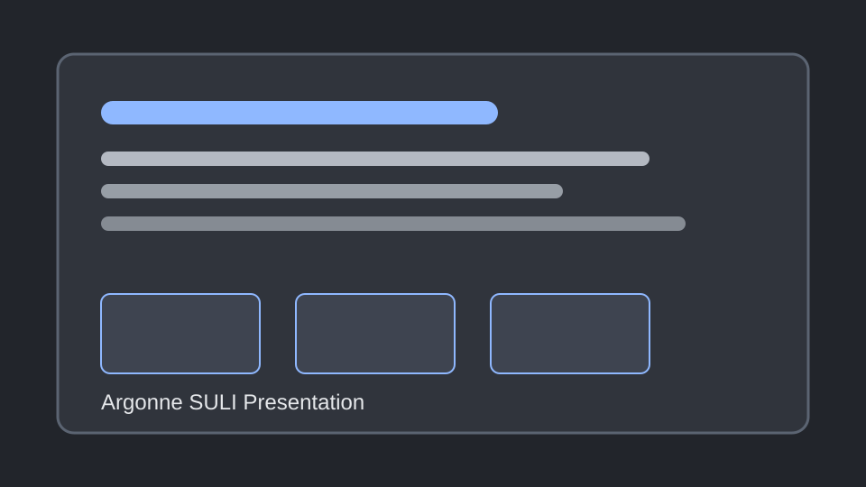

Past Work
Research, internship, and undergraduate assistant work organized around the task performed and the skills gained.
Ames National Lab
Task
Contributed to laboratory and technical work supporting research goals, documentation, and day-to-day project execution.
Skills Learned
Research discipline, technical communication, experimental awareness, documentation habits, and collaboration in a professional lab environment.
Argonne National Lab SULI Intern
Task
Participated in a structured research internship, developed technical understanding of the assigned project area, and communicated findings to a broader technical audience.
Skills Learned
Research presentation, literature review, data interpretation, professional communication, and working within a national laboratory research culture.
Presentation

Presentation materials and related coverage can be highlighted here with a visual preview and external article link.
Read ArticleArgonne Intern
Task
Supported technical work at Argonne National Laboratory through assigned project responsibilities, research support, and documentation.
Skills Learned
Professional lab practices, technical problem solving, project communication, and adapting quickly to new tools and research expectations.
ISU ZT-CARD URA
Task
Worked as an undergraduate research assistant on ZT-CARD activities, supporting project tasks, technical documentation, and research progress.
Skills Learned
Undergraduate research methods, teamwork, technical reading, careful record keeping, and communicating progress clearly with mentors and peers.